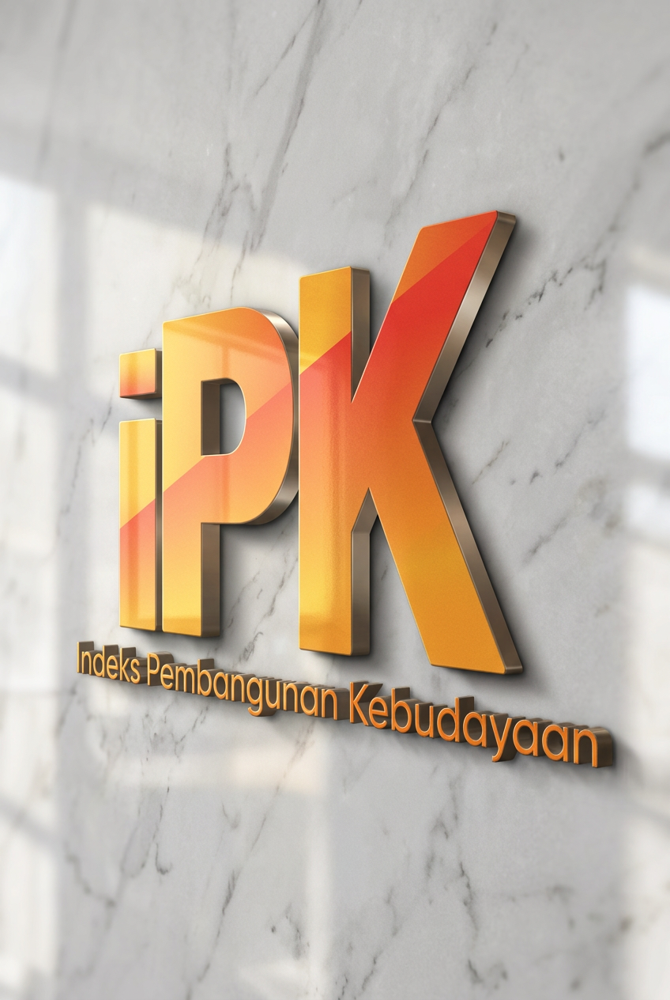
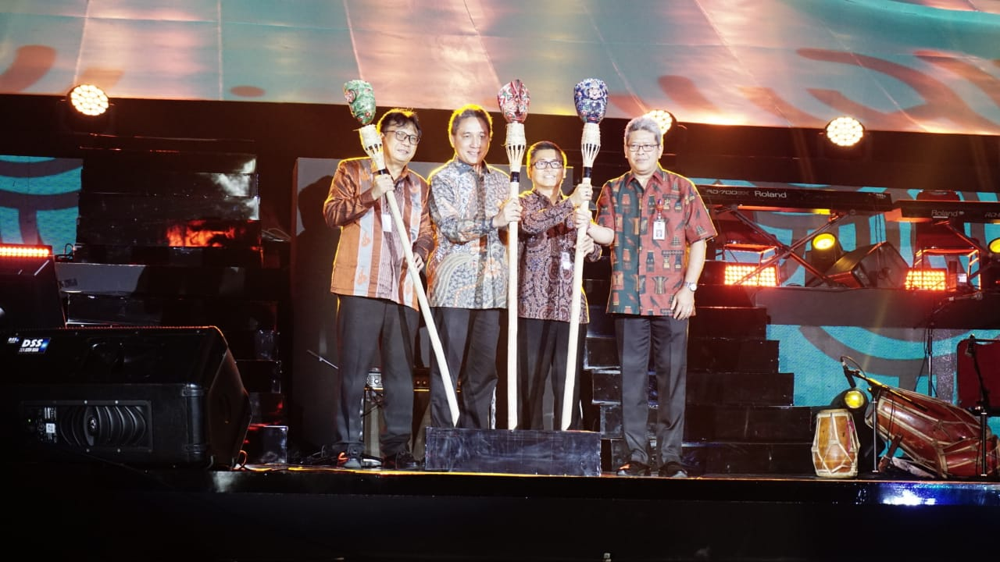

Indeks Pembangunan Kebudayaan (IPK) merupakan instrumen untuk menggambarkan capaian pembangunan kebudayaan di Indonesia secara terukur. IPK menyajikan informasi mengenai kondisi pembangunan kebudayaan melalui sejumlah dimensi yang mencerminkan kehidupan kebudayaan masyarakat..
Melalui IPK, perkembangan pembangunan kebudayaan dapat dilihat secara lebih komprehensif, baik pada tingkat nasional maupun daerah. Data dan informasi yang dihasilkan dapat menjadi salah satu bahan dalam memahami kondisi kebudayaan, mengidentifikasi tantangan, serta mendukung perumusan kebijakan pembangunan kebudayaan yang lebih tepat sasaran.
Pembangunan kebudayaan merupakan bagian penting dari pembangunan nasional. Kebudayaan tidak hanya berkaitan dengan seni dan tradisi, tetapi juga mencakup pengetahuan, pendidikan, ekspresi, warisan budaya, literasi, kehidupan sosial, serta berbagai aspek lain yang membentuk kehidupan masyarakat.
Untuk memahami perkembangan pembangunan kebudayaan secara lebih objektif, diperlukan ukuran yang dapat menggambarkan kondisi tersebut secara terstruktur. Indeks Pembangunan Kebudayaan hadir sebagai salah satu instrumen untuk mengukur dan memantau perkembangan pembangunan kebudayaan melalui indikator-indikator yang dapat dibandingkan dari waktu ke waktu dan antarwilayah.
Nilai IPK memberikan gambaran mengenai capaian pembangunan kebudayaan berdasarkan berbagai aspek kehidupan kebudayaan masyarakat. Dengan demikian, IPK tidak dimaksudkan untuk menggambarkan seluruh kompleksitas kebudayaan secara keseluruhan, melainkan menjadi alat ukur yang membantu melihat perkembangan aspek-aspek kebudayaan yang dapat diukur melalui data.
Kebudayaan merupakan bagian penting dari pembangunan nasional. Namun, untuk memahami perkembangan pembangunan kebudayaan secara lebih objektif, diperlukan instrumen yang mampu menggambarkan capaian pembangunan tersebut melalui data yang terukur.
Kehadiran Indeks Pembangunan Kebudayaan (IPK) menjadi langkah untuk menghadirkan ukuran yang dapat membantu pemerintah memahami kondisi dan perkembangan pembangunan kebudayaan di Indonesia. IPK dirancang untuk memotret capaian pembangunan kebudayaan, bukan untuk memberikan penilaian terhadap tinggi atau rendahnya nilai budaya suatu wilayah.
Dengan pendekatan tersebut, IPK menjadi salah satu instrumen yang membantu melihat pembangunan kebudayaan secara lebih sistematis, sekaligus menyediakan informasi yang dapat digunakan untuk pemantauan, evaluasi, dan perumusan kebijakan.

Menjadi langkah awal dalam menghadirkan ukuran terukur untuk melihat capaian pembangunan kebudayaan Indonesia.
Menandai hadirnya IPK sebagai instrumen untuk mengukur dan memantau capaian pembangunan kebudayaan Indonesia.
Memperkuat pengembangan IPK melalui koordinasi dan sinergi lintas lembaga dalam pembangunan kebudayaan Indonesia.
Mendorong pemanfaatan IPK dalam pemantauan dan evaluasi pembangunan kebudayaan secara lebih terstruktur dan berkelanjutan.
Memperluas pemanfaatan data IPK untuk memahami perkembangan pembangunan kebudayaan di berbagai wilayah Indonesia.
Mengembangkan IPK sebagai bagian dari ekosistem data untuk mendukung pemahaman dan kebijakan pembangunan kebudayaan.
IPK membantu menyediakan gambaran berbasis data mengenai perkembangan pembangunan kebudayaan. Informasi yang dihasilkan dapat digunakan untuk melihat capaian, memahami perbedaan antarwilayah, memantau perubahan dari waktu ke waktu, serta mengidentifikasi aspek pembangunan kebudayaan yang perlu mendapatkan perhatian.
Dengan tersedianya ukuran yang terstruktur, IPK dapat menjadi salah satu sumber informasi dalam proses perencanaan, pemantauan, dan evaluasi pembangunan kebudayaan.
IPK melihat pembangunan kebudayaan melalui beberapa aspek kehidupan masyarakat. Pendekatan multidimensi ini digunakan karena pembangunan kebudayaan memiliki cakupan yang luas dan tidak dapat direpresentasikan hanya melalui satu ukuran.
Dalam pengembangannya, IPK mencakup tujuh dimensi pembangunan kebudayaan:
Menggambarkan keterkaitan kebudayaan dengan aktivitas ekonomi, termasuk kontribusi dan pemanfaatan potensi budaya dalam kehidupan masyarakat.
Menggambarkan keterkaitan pendidikan dengan pembangunan kebudayaan, termasuk akses, partisipasi, dan peran pendidikan dalam pengembangan pengetahuan dan kebudayaan.
Menggambarkan kemampuan masyarakat dalam mempertahankan nilai, hubungan sosial, keberagaman, serta kehidupan budaya di tengah perubahan.
Menggambarkan kondisi dan keberlanjutan warisan budaya, termasuk upaya pelindungan, pemanfaatan, pengembangan, dan pewarisannya.
Menggambarkan kesempatan dan partisipasi masyarakat dalam mengekspresikan, mengembangkan, dan menikmati berbagai bentuk ekspresi budaya.
Menggambarkan kemampuan dan kebiasaan masyarakat dalam mengakses, memahami, memanfaatkan, dan mengembangkan pengetahuan melalui aktivitas literasi.
Menggambarkan keterlibatan dan kesetaraan perempuan dan laki-laki dalam berbagai aspek kehidupan kebudayaan.
IPK dapat dimanfaatkan sebagai salah satu sumber informasi dalam memahami kondisi dan perkembangan pembangunan kebudayaan. Data yang dihasilkan dapat mendukung proses pemantauan dan evaluasi, membantu mengidentifikasi tantangan pembangunan kebudayaan, serta menjadi bahan pertimbangan dalam penyusunan kebijakan dan program.
Pemanfaatan IPK tidak berhenti pada nilai indeks. Analisis terhadap dimensi dan indikator pembentuknya dapat memberikan gambaran yang lebih mendalam mengenai aspek pembangunan kebudayaan yang perlu dipertahankan, diperkuat, maupun dikembangkan.
Indeks Pembangunan Kebudayaan (IPK) menyajikan gambaran capaian pembangunan kebudayaan pada berbagai tingkat wilayah, mulai dari nasional hingga provinsi. Penyajian ini memungkinkan pengguna untuk melihat kondisi pembangunan kebudayaan secara menyeluruh sekaligus memahami karakteristik dan perkembangan setiap daerah.
Melalui hasil pengukuran IPK, pengguna dapat membandingkan capaian antarwilayah, mengamati perkembangan dari waktu ke waktu, serta memperoleh informasi yang mendukung perencanaan, evaluasi, dan pengambilan kebijakan di bidang kebudayaan.